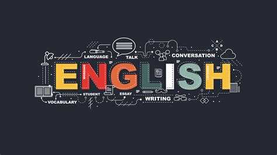
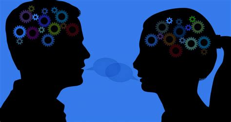
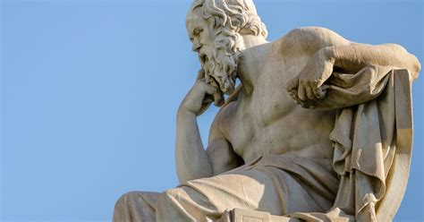
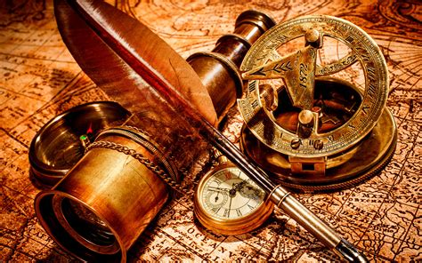
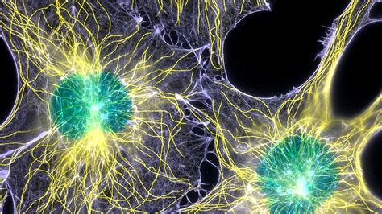
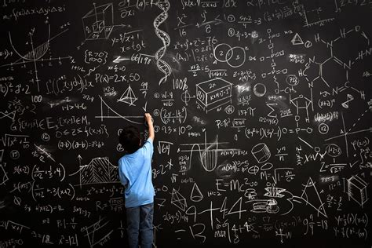
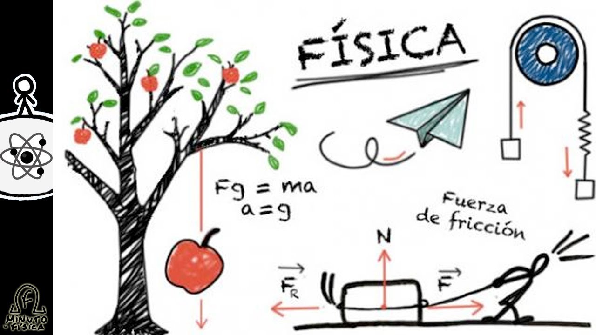

Class teacher: Mr Jonathan Esparza.

To learn vocabulary relate to conservation and identical verbs and nouns.
To talk about conservation and identical verbs and nouns To learn and use present, past, future and modal passives and advance passive structures.
To talk about possible situation in writing.
To read and understand a text about endangered animals.
To discuss endangered animals and the fur trade.
Thanks to these activities I have improved my level of english across the year.
These are the activities we have done of the subject.
You can find all the activities here.
Class teacher: Mr Jonathan Esparza.
Unit 2: Interact quite clearly, confidently, and appropriately in a range of formal and informal social situations with a limited but effective command of the spoken language.
Unit 3: Directly access the main points and important details of up-to-date English language texts, such as those published on the web, for professional or general investigation, through the efficient use of ICT and reference tools where required.
Thanks to the activities we now know how big brands operate and their business model.
These are the activities we have done of the subject.
You can find all the activities here.
Profesor de la clase: Mr Juan Martín Trujillo.

Identificar las implicaciones socioculturales de la producción y el consumo de cultura digital
Objetivo: Ubicar cronológicamente los textos más representativos de la literatura ecuatoriana: siglos XIX a XXI.
Objetivo:Analizar las causas de la diglosia en relación con las lenguas originarias y sus consecuencias en el ámbito educativo, la identidad, los derechos colectivos y la vida cotidiana.
He aprendido mucho sobre la poesía, la forma de comunicarme y identificar información legítima.
Estas son las actividades que hemos culminado sobre la materia.
Se pueden encontrar las actividades aquí.
Profesor de la clase: Mr Juan Martín Trujillo.

Objetivos 2do parcial
Identificar la diferencia entre sabiduría y filosofía, para entender la importancia del estudio de esta materia.
Reconocer las diferencias entre las ciencias y la Filosofía, para identificar la relación que existe entre esta y el conocimiento.
Reconocer el tema del amor desde la Filosofía, para comprender su origen y manifestación en la sociedad.
Identificar las diferentes concepciones relativas al amor a lo largo de la historia y los diferentes procesos culturales.
Reconocer el valor de la felicidad en la condición humana como un parámetro fundamental en la búsqueda filosófica del sentido de la vida
Identificar la búsqueda de la felicidad como una fuente de placer constante.
Objetivos 3er parcial
Identificar los juicios del gusto y su relación con la experiencia estética.
Identificar la belleza como un concepto que ha evolucionado mediante procesos culturales y diferentes contextos.
Identificar la fealdad dentro de los grados de belleza y su relación con los criterios estéticos.
Estas son las actividades que hemos culminado sobre la materia.
Se pueden encontrar las actividades aquí.
Profesora de la clase: Miss Ginna Guzmán.

Distinguir los grandes procesos sociales, económicos, culturales, políticos ideológicos en América Latina y el Ecuador durante los últimos siglos, a partir del análisis de sus procesos de mestizaje y liberación, para comprender las razones profundas de sus formas de ser, pensar y actuar.
Examinar los sistemas, teorías y escuelas económicas, a través de su relación con el trabajo, la producción y sus efectos en la sociedad para enfrentar los retos sociales como ciudadanos y como agentes de cambio, ya sea en el mundo laboral, personal o comunitario.
Gracias a la historia nos enteramos y aprendimos de nuestro pasado, sobre los obreros, las reformas ocurridas, las revoluciones que hubieron y las diferencias de las clases sociales.
Lo aprendido fue sobre el conservadurismo y el liberalismo que hasta el día de hoy forma el pensamiento y la forma de operar de las personas y de un gobierno, dando a nuestra impresión que nos parece correcto.
Lo que aprendimos fue sobre un suceso que pudo haber sido catastrófico, en la época de la guerra fría, que fue el suceso de los misiles en cuba, que pudo haber desatado una guerra nuclear.
Estas son las actividades que hemos culminado sobre la materia.
Se pueden encontrar las actividades aquí.
Profesor de la clase: Mr Walter Guillén.

O.CN.B.5.1. Demostrar habilidades de pensamiento científico a fin de lograr flexibilidad intelectual; espíritu crítico; curiosidad acerca de la vida y con respecto a los seres vivos y el ambiente; trabajo autónomo y en equipo, colaborativo y participativo; creatividad para enfrentar desafíos e interés por profundizar los conocimientos adquiridos y continuar aprendiendo a lo largo de la vida, actuando con ética y honestidad.
O.CN.B.5.1. Demostrar habilidades de pensamiento científico a fin de lograr flexibilidad intelectual; espíritu crítico; curiosidad acerca de la vida y con respecto a los seres vivos y el ambiente; trabajo autónomo y en equipo, colaborativo y participativo; creatividad para enfrentar desafíos e interés por profundizar los conocimientos adquiridos y continuar aprendiendo a lo largo de la vida, actuando con ética y honestidad.
OG.CN.4.Comprender el punto de vista de la ciencia sobre la naturaleza de los seres vivos, su diversidad, interrelaciones y evolución; sobre la Tierra, sus cambios y su lugar en el Universo, y sobre los procesos, físicos y químicos, que se producen en la materia. (U1, U2, U3, U5, U6).
OG.CN.5.Resolver problemas de la ciencia mediante el método científico, con la identificación de problemas, la búsqueda crítica de información, la elaboración de conjeturas, el diseño de actividades experimentales, el análisis y la comunicación de resultados confiables y éticos. (U1, U2, U3, U5, U6).
OG.CN.6.Utilizar el lenguaje oral y el escrito con propiedad, así como otros sistemas de notación y representación, cuando se requiera. (U1, U2, U3, U5, U6).
O.CN.B.5.1. Demostrar habilidades de pensamiento científico a fin de lograr flexibilidad intelectual; espíritu crítico; curiosidad acerca de la vida y con respecto a los seres vivos y el ambiente; trabajo autónomo y en equipo, colaborativo y participativo; creatividad para enfrentar desafíos e interés por profundizar los conocimientos adquiridos y continuar aprendiendo a lo largo de la vida, actuando con ética y honestidad.
OG.CN.1. Desarrollar habilidades de pensamiento científico con el fin de lograr flexibilidad intelectual, espíritu indagador y pensamiento crítico; demostrar curiosidad por explorar el medio que les rodea y valorar la naturaleza como resultado de la comprensión de las interacciones entre los seres vivos y el ambiente físico. (U1, U2, U3, U6).
OG.CN.4.Comprender el punto de vista de la ciencia sobre la naturaleza de los seres vivos, su diversidad, interrelaciones y evolución; sobre la Tierra, sus cambios y su lugar en el Universo, y sobre los procesos, físicos y químicos, que se producen en la materia. (U1, U2, U3, U5, U6).
OG.CN.5.Resolver problemas de la ciencia mediante el método científico, con la identificación de problemas, la búsqueda crítica de información, la elaboración de conjeturas, el diseño de actividades experimentales, el análisis y la comunicación de resultados confiables y éticos. (U1, U2, U3, U5, U6).
OG.CN.6.Utilizar el lenguaje oral y el escrito con propiedad, así como otros sistemas de notación y representación, cuando se requiera. (U1, U2, U3, U5, U6).
Aprendí mucho sobre anatomía y los sistemas del cuerpo humano gracias a las clases, de aquellos sistemas siendo como el circulatorio, el nervioso y el respiratorio.
Estas son las actividades que hemos culminado sobre la materia.
Se pueden encontrar las actividades aquí.
Profesor de la clase: Mr Jaime Gaibor.
Interpretar la estructura atómica y molecular, desarrollar configuraciones electrónicas y explicar su valor predictivo en el estudio de las propiedades químicas de los elementos y compuestos, impulsando un trabajo colaborativo, ético y honesto.
Optimizar el uso de la información de la tabla periódica sobre las propiedades de los elementos químicos y utilizar la variación periódica como guía para cualquier trabajo de investigación científica, sea individual o colectivo.
He aprendido mucho sobre fórmulas químicas y composiciones químicas gracias a las clases, investigamos sobre todos los tipos de agua que hay en la naturaleza, dando que hay 11 tipos de agua que están a nuestra disposición, y tenemos que saber de ellas para cuidarnos de la misma.
Estas son las actividades que hemos culminado sobre la materia.
Se pueden encontrar las actividades aquí.
Profesor de la clase: Mr Fransisco Ochoa.

Entender las sucesiones y el álgebra lineal como elementos del cálculo que simplifican procesos de cálculo y ayudan a encontrar solución a problemas cotidianos que requerirían mayor fuerza y números de operaciones matemáticas.
Matemáticas me enseñó mucho a resolver problemas sea o no relacionado con la matemática, gracias a las matemáticas, dando que útlimamente el tema ha tratar es pre-cálculo y álgebra lineal.
Estas son las actividades que hemos culminado sobre la materia.
Se pueden encontrar las actividades aquí.
Profesor de la clase: Mr Fransisco Ochoa.

Entender las leyes de Newton y como la interacción de las fuerzas con elementos elásticos y su aplicación en superficies permiten lograr efectos de gran aplicación en la vida cotidiana. Comprender la naturaleza de la energía y su transformación en elementos de uso cotidiano que permitan su aprovechamiento para mejorar la calidad de vida de las personas. Estas son las actividades que hemos culminado sobre la materia.
He aprendido mucho sobre la óptica, la luz y leyes físicas, dando el tema de la óptica siendo muy interesante debido que tuvo un gran debate sobre si era una párticula o una onda.
Se pueden encontrar las actividades aquí